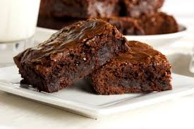

BROWNIE DE CHOCOLATE

Buenas! En esta página te voy explicar la receta para cocinar un brownie de chocolate clásico.
Sobre la receta
Es un postre muy versatil para hacerlo con diferentes estilos de chocolate o frutos secos, así como también podés acompañarlo con helado, crema o lo que más te guste!
Tiempo y temperatura
Todos piensan que la clave para que salga bien es el chocolate, pero
la verdadera clave es respetar el tiempo y la temperatura de
cocción.
A diferencia de la cocción de una torta en la cual queremos que se
“infle”, cuando hacemos un brownie casero queremos todo lo contrario:
un postre más bien compacto para que quede bien húmedo!
En
fin, a continuación te dejo los ingredientes y los pasos a seguir para
realizar este brownie.
Ingredientes:
- 100gr de manteca
- 150gr de chocolate
- 2 huevos
- 1 taza de azúcar
- 100gr de harina
Cómo hacer brownie de chocolate: pasos
- Para comenzar con la receta de brownies de chocolate, vamos a colocar la manteca y el chocolate picados en una sartén, y llevarlos a fuego bien bajo. Lo tapamos y vamos a dejarlo por unos 5 minutos sin tocar.
- Ahora retirar del fuego y revolver los ingredientes hasta que esté todo derretido e integrado.
- A parte vamos a batir los 2 huevos con el azúcar hasta que queden bien blancos, esto es clave para que el brownie casero quede bien húmedo.
- Agregar el chocolate derretido y batir hasta que esté integrado.
- Sumar el harina 0000 tamizada en dos partes e integrar todo. Es importante batir fuerte antes de pasar el brownie de chocolate al molde
- Colocar en una placa y cocinar al horno fuerte (200-220°) por 20 minutos.
Es mejor sacarlo antes y si lo queremos más cocido volver a colocarlo en
el horno unos minutos más. Lo importante es no pasarse para que el brownie
no quede seco.
Por último te dejo un video sobre esta receta: